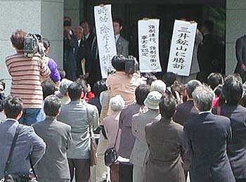
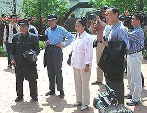

「中国人強制連行、強制労働事件福岡訴訟」判決（写真：2002年4月26日、福岡地方裁判所前にて積さん撮影） 中国人強制連行とは
日中戦争による国内の労働力不足を解消するため、日本政府は昭和17年、支配していた満州国（中国）の国民を日本国内で
働かせる政策を閣議決定。第二次世界大戦敗戦までに3万8935人をら致、あるいは言葉たくみにだまして、炭鉱や金属鉱山、
ダムの建設現場など全国135事業所でタダ働き、あるいは同様の安い賃金で働かさせ、その結果6830人が死亡した。三井鉱山に
も炭鉱としては最多の5517人が送り込まれた。
< 判決要旨 >
第２ 理由の要旨
また、中国人労働者の日本国内での就労状況についても、その実態は、原告ら中国人労働者の意思にかかわらず、当該事業
主との間に一方的に労使関係を生じさせるものであったこと、被告会社における原告らの本件強制労働の実態は、戦時下にお
いて日本全体が食糧不足に陥り、一般の日本人の労働条件も悪化していた事情にあったことを考慮しても、居住及び食糧事情、
被告会社の従業員による暴力等の点に照らして、劣悪かつ過酷なものであったといわざるを得ない。
被告国は、昭和21年、本件強制連行及び強制労働に関し、被告会社等に事業場報告書の作成を命じ、調査員を事業場に
派遣し、現地調査報告書を作成させ、これをもとに外務省報告書を作成したが、後にその廃棄を命じたこと、そうであるに
もかかわらず、被告国の内閣総理大臣及び政府委員らは、昭和29年9月6日以降、国会において、本件強制連行及び強制
労働の事実関係は、資料がないため明確ではなく、原告ら中国人労働者の就労は、原告らの自由な意思による雇用契約に基
づくものであった旨の答弁を、繰り返し行ったことが認められるが、被告らの行為が直ちに、原告らが本件損害賠償請求権
を行使することを妨げたとして、不法行為に当ると認めることができない。 本件損害賠償請求の対象とされる被告会社の行為は、戦時下における労働力不足を補うために、被告国と共同して、詐言、 脅迫及び暴力を用いて本件強制連行を行い、過酷な待遇の下で本件強制労働を実施したものであって、その態様は非常に悪 質である。 さらに、被告会社は、原告らにその労働の対価を支払うこともなく、十分な食事を支給していなかったにもかかわらず、 これを行ったことを前提に、本件強制労働の実施による損失補償として、被告国から774万5206円を受取っており、これは 現在の貨幣価値に換算すると数十億円にも相当する。このように、被告会社は、本件強制連行及び強制労働により、 戦時中に多くの利益を得たと考えられる上、戦後においても利益を得ている。 日中共同声明においては、「中華人民共和国政府は、日中両国民の友好のために、日本国に対する損害賠償の請求を放棄 することを宣言する。」とされていること、日中平和友好条約においては、日中共同声明が厳格に遵守されるべきことが確 認されたことが認められる。他方、サンフランシスコ平和条約締結当時、中国は、中国国民が日本政府に対して、日中戦争 において被った損害の賠償を請求し得るとの立場を採っていたこと、また、昭和62年ころから、中国国内では、日本政府 に対して上記損害の賠償を行い得るとの見解が支持されるようになり、当時の銭副首相兼外相は、平成7年3月、日中共同 声明で放棄したのは国家間の賠償であって、個人の賠償請求は含まれず、補償請求は国民の権利であり、政府は干渉すべき ではない旨の見解を示したことなどの事情を考慮すると、日中共同声明及び日中平和友好条約により、直ちに放棄されたも のと認めることはできない。

4月28日、大牟田市 宮浦公園を原告2人（左）と中国側弁護士2人が訪れた。
|